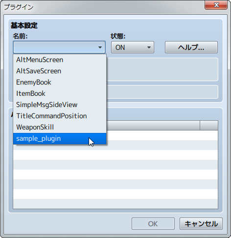

プラグインを有効にする方法
RPGツクールMVでは、ユーザーにとってより使いやすいプラグイン機能が採用されています。
プラグインを有効にする方法
［ツール］の［プラグイン管理］を使用してプラグインを有効にします。
-
空欄をダブルクリックします。
-
使用するプラグインを選択し、［OK］ボタンをクリックします。
-
選択したプラグインが一覧に表示されます。
公式以外のプラグインを追加する方法
プラグインを追加する場合は、プロジェクトフォルダの［js］→［plugins］フォルダに該当のプラグインのjsファイルをコピーした後、上記の手順で有効にしてください。
-
プロジェクトフォルダの［js］→［plugins］フォルダに該当のプラグインのjsファイルをコピーします。
-
プラグイン管理の空欄をダブルクリックし、［名前］をクリックすると、追加したプラグイン名が表示されます。これを選択して［OK］をクリックします。
 -
追加したプラグインが一覧に表示されます。
［状態］を一括変更
Shiftキーでプラグインを複数選択して右クリックすると［状態］を一括変更することができます。